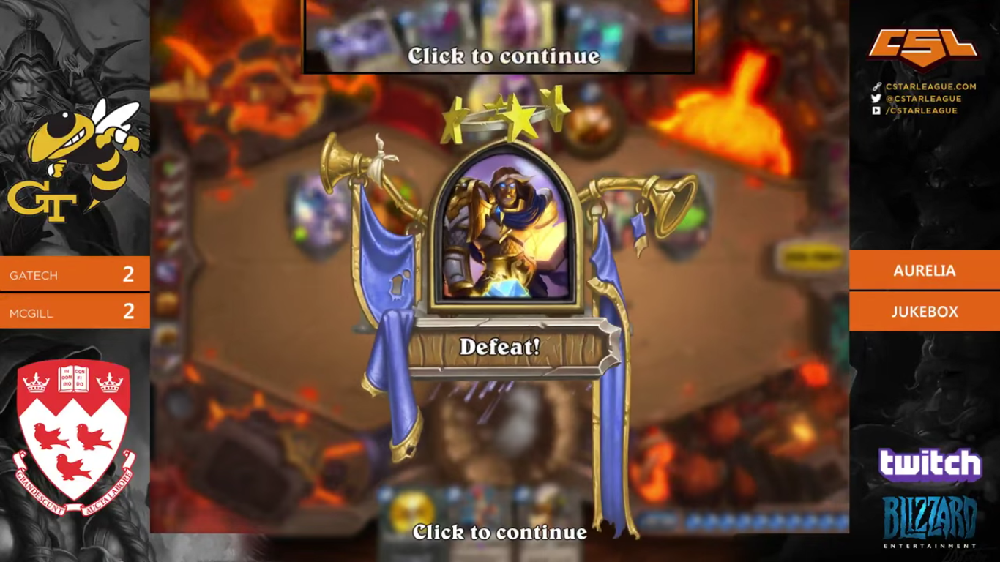

A website by Eric Wan
Despite losing 1-3 in a best-of-five series to UNC's Hearthstone team, the "Hearth Heels", Georgia Tech's very own e-athletes stay undefeated due to a scheduling error in week 2 of the Spring season.
As part of the Collegiate StarLeague (CSL) series, GT Hearthstone faces off head-to-head with other universities throughout North America and Europe. The Spring season comprises of a 6-week Round Robin before the playoffs. Each team brings their 5 best players and their best decks - but no two members may use the same in-game "hero" class, of which there are 9 total. Players will only play once in a predetermined order, win or lose, and the first team to 3 victories takes the match.
The Collegiate StarLeague is open to all accredited universities in North America/Europe. It is a growing source of e-sports competitions for a number of games popular in the competitive scene. Their website is listed here.
The game began at 6pm EST on Saturday the 30th, and Captain Zack Braun started off with a quick victory to bring the GT team up 1-0. But the Hearth Heels replied with a resounding rebuttal and swept the rest of the series. I had a chance to speak with Zack and a few other members shortly after their surprising defeat.
"Yeah... it was kind of rough. We just had 3 rounds of bad luck finish it off. It sucks because we beat them last season no problem - we beat everyone last season haha"
And indeed, GT Hearthstone won the Collegiate StarLeague last semester - undefeated throughout the regular season AND the playoffs, taking home a nice $2,000 check to split amongst themselves.
Because Hearthstone lacks a true "spectator" mode, streams were spectated and broadcasted from McGill's point of view.
The Yellow Jackets were devastated by their loss - the last time they met, it was the Hearth Heels who had lost 1-3 - but in a shocking turn of events, a CSL Admin deleted the match results.
As it turns out, the preliminary schedule had originally listed the two teams to face off at 6pm on Saturday, but the updated schedule moved the two teams to next Friday so they could be broadcasted on the CSL stream on Twitch.tv, the largest streaming platform for a wide variety of e-sports entertainment.
The Admin ruled that the streaming schedule took precedence, and that the GT team would have a chance to redeem themselves on Friday, where they would be broadcasted for all to view, complete with two commentators, or "casters", as they're called in the gaming community.
So, the GT team has no losses recorded for this season. They will battle it out again with the Hearth Heels on Friday the 5th at 10pm EST, right here, to kick off the start of hopefully another stellar season.